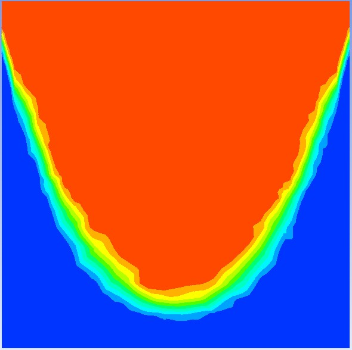

Circular Motion of Water in a Barrel
Problem Definition
Problem
Define the scenario and objectives of the simulation, such as expected fluid surface profile.
Hand Calculations of Expected Results
Include theoretical equations and sample calculations (e.g., parabolic surface shape, free surface height).
Setup
Geometry
Explain the 3D or 2D geometry modelled in the CAD or pre-processor.
Meshing
Describe mesh details: size, refinement, and boundary layer elements if any.
Fluent Solver
Summarize Fluent settings: model selection (VOF, gravity, rotational reference frame), time step, and boundary conditions.
Results
40 RPM

65 RPM

80 RPM
100 RPM

Errors
Discuss any simulation convergence issues, mesh problems, or mismatches between CFD and theoretical predictions.